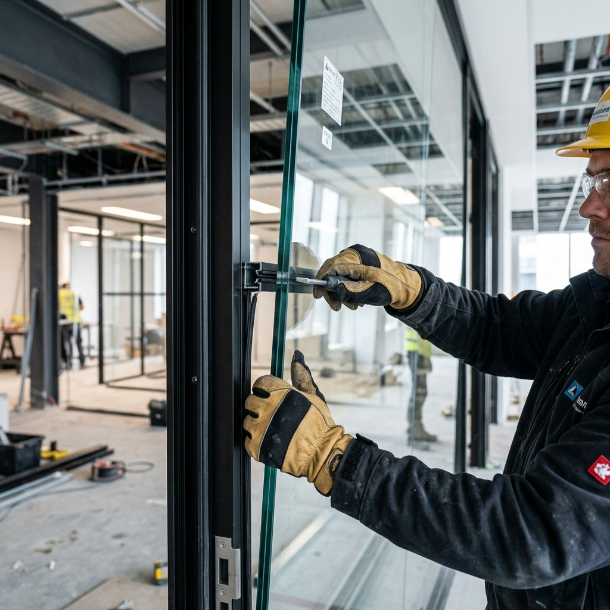

Panduan
5 Jenis Kaca Tempered Terbaik untuk Bangunan Modern
Kaca tempered merupakan pilihan utama untuk bangunan modern karena kekuatan dan keamanannya. Pelajari jenis-jenis kaca tempered yang cocok untuk proyek Anda.
Tips, panduan, dan inspirasi seputar aluminium, kaca, dan arsitektur modern.
Kaca tempered merupakan pilihan utama untuk bangunan modern karena kekuatan dan keamanannya. Pelajari jenis-jenis kaca tempered yang cocok untuk proyek Anda.

Tidak semua profil aluminium sama. Ketahui cara membedakan kualitas aluminium agar rumah Anda tampil premium dan tahan lama.

Curtain wall terus berkembang dengan teknologi terbaru. Simak tren desain fasad kaca yang sedang populer di tahun 2026.

Jendela aluminium memang tahan lama, tapi perawatan yang tepat bisa memperpanjang usianya. Berikut tips perawatan yang mudah dilakukan.

Pintu sliding kaca memberikan kesan luas dan modern. Pelajari keunggulan serta tips pemasangan untuk rumah minimalis Anda.

Kedua finishing ini populer untuk aluminium. Kenali perbedaan, kelebihan, dan kekurangan masing-masing untuk proyek Anda.